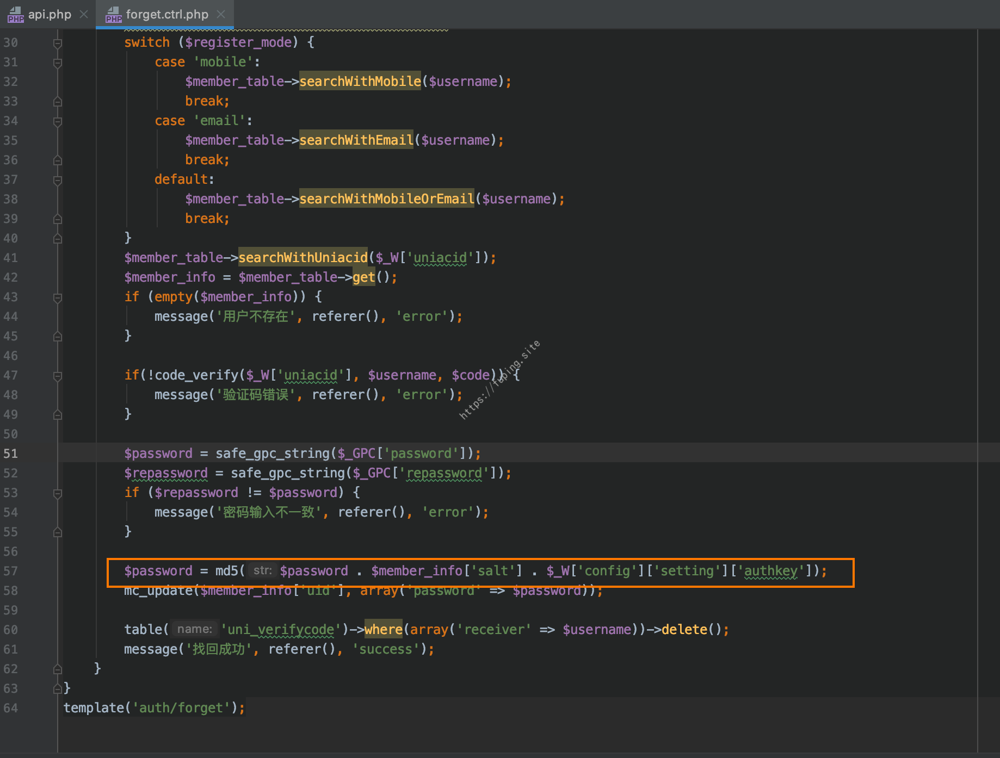
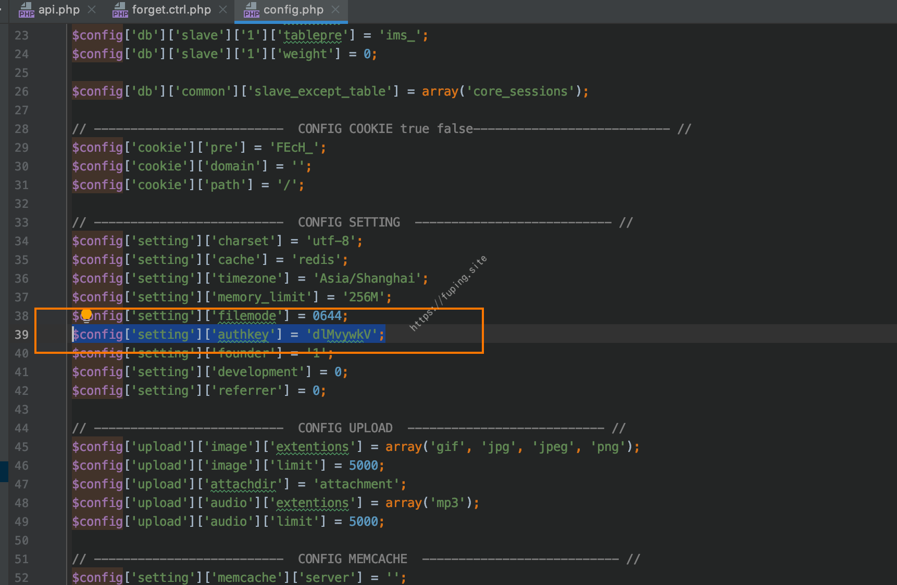
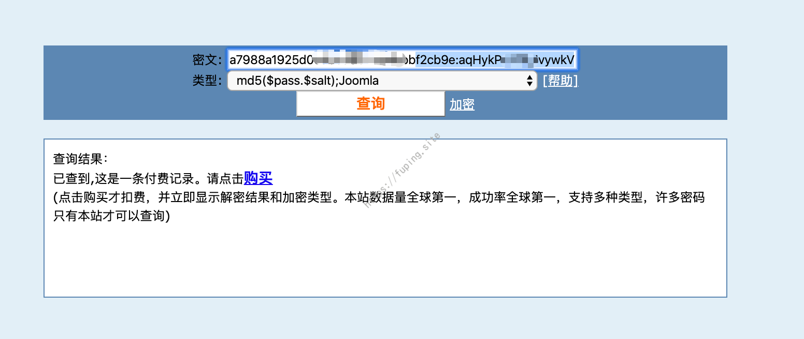
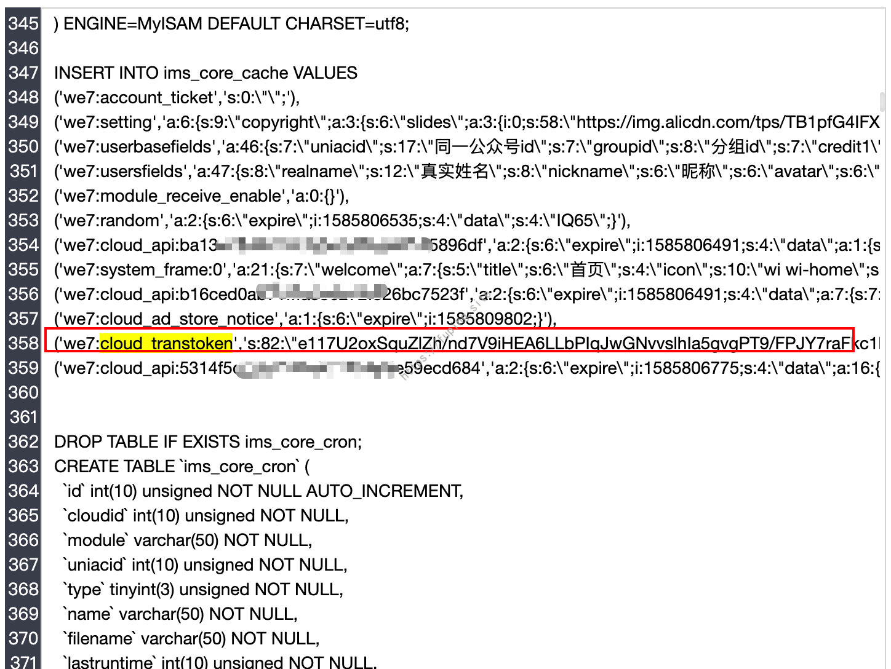
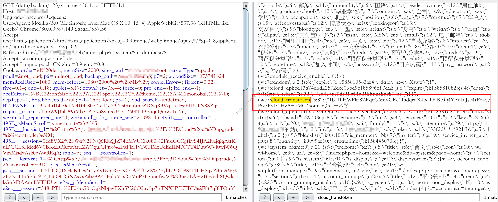
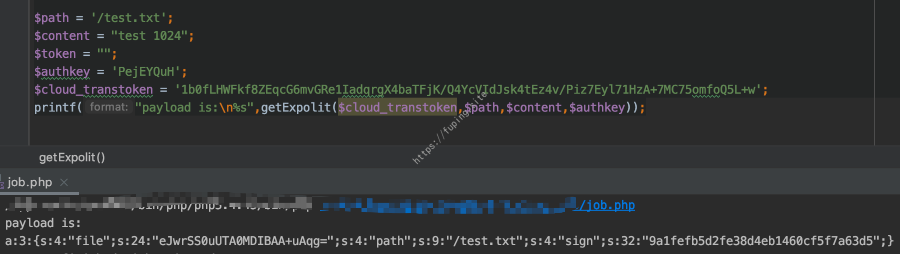

记一次从源代码泄漏到后台获取webshell的过程
0x01 前言
在一次授权测试中对某网站进行测试时，marry大佬发现了一个网站的备份文件，里面有网站源代码和数据库备份等。根据网站信息和代码都可以发现该系统采用的是微擎cms，利用数据库备份中的用户信息解密后可以登录系统，接下来要看是否可以获取webshell。
0x02 WEBSHELL获取的尝试
有了数据库备份文件，然后找一下是否有用户的信息，能否登录系统。
1.登录后台
解压备份文件可以从data/backup目录下找到数据库的备份，从中找到了用户表ims_users。
知道了用户名、加密后的密码和salt，我们去看一下密码加密的算法。
我这里直接搜索password，在forget.ctrl.php中找到了一处。

密码加密方法是$password = md5($password . $member_info['salt'] . $_W['config']['setting']['authkey']);。是根据原密码+salt+authkey的形式进行拼接，然后进行md5加密。
authkey在data/config.php文件中。

现在salt和authkey以及加密后的密码已经获得，开始去解密密码是多少。这里我们将salt和authkey拼接为新的salt，然后使用md5($pass.$salt)的加密方式进行解密。

解密后即可登录后台。
接下来就是webshell的获取了。
本以为都已经是管理员了，获取shell就是分分钟的事，然而事情远远没有那么简单。
2.失败的获取shell过程
根据搜索发现，该cms后台获取shell的方法也不少，主要还是围绕执行sql这里。但我这里都失败了，就简单的提一下。
第一种方法：
站点管理-附件设置-图片附件设置-支持文件后缀，任意添加一个类型，例如添加pppppp。
然后执行sql语句
1 | UPDATE ims_core_settings SET value = replace(value, 'pppppp', 'php ') |
更新缓存，之后就可以上传"*.php "文件了。但是有限制，适用于apache下，而且版本有限制。目标站不使用该方法的原因有二，一是该系统上传的位置是腾讯云COS上，二是server是Tengine。
第二种方法：
第二种方法也是和sql执行有关，利用日志文件写shell。
1 | show variables like '%general%'; #查看配置 |
或者通过慢查询（slow_query_log）的方法写shell。但目标系统也是失败，执行sql的时候报错。
还有一些其他的方法，这里测试也是失败的，就不再列举了。
0x03 代码审计
病急乱投医，熬成老中医。既然之前的方法不管用，只好去翻代码吧，找找是否有新的利用方式。翻出之前的一个文档，从里面找到之前的审计过程，看能否对现在有用。结果打开发现只有一个数据包和还有一句未实现的结论。
没办法，只好重新围着这个点继续审计，看是否能有所进展。
1.分析
打开文件web/source/cloud/dock.ctrl.php，找到执行的download方法。
代码比较简单，我大概说一下这里的流程：
如果请求包非Base64加密的格式，那么$data就是请求包的内容。然后对$data进行发序列化返回$ret，接下来获取$ret['file']并Base64解密返回$file。当存在gzcompress和gzuncompress这两个函数时，就会利用gzuncompress函数对$file进行解压操作。
将获取的$file进行md5加密后，与$ret['path']以及获取的$_W['setting']['site']['token']进行拼接为$string。当满足$_W['setting']['site']['token']非空并且$stringmd5加密后的结果与$ret['sign']一致时，才可以进行下面的操作。下面就是文件的写入了，根据$ret['path']进行判断，然后写入的位置不一样。
这里关键的一点就是$_W['setting']['site']['token']这个值的获取。这个是利用authcode函数对cache_load(cache_system_key('cloud_transtoken'))进行解密获取的。
authcode函数位于framework/function/global.func.php文件中。
由上面代码可以看出，要想使用authcode加解密，需要知道$GLOBALS['_W']['config']['setting']['authkey']，在上面提到过，authkey在data/config.php文件中。
那么如果想任意写文件，就需要知道cache_system_key('cloud_transtoken')的内容了。
2.cloud_transtoken的获取
通过搜索发现，这个值是在文件framework/model/cloud.mod.php中的cloud_build_transtoken函数中被写入的，通过进入cache_write方法，发现会写入数据库中。
既然会写入到数据库中，而且目标系统下载到时候有数据库的备份文件，我们直接在数据库备份文件中搜索cloud_transtoken。结果并没有找到，可能原因是没有写入cloud_transtoken的时候就进行了数据库备份。
我们往上回溯，看哪里调用了cloud_build_transtoken。
发现了其中的一条利用链：
当访问http://ip:port/web/index.php?c=cloud&a=profile 时，就会判断站点ID和通信密钥是否为空（即站点是否注册），如果站点注册了，就会调用cloud_site_info()函数获取站点信息。函数cloud_site_info()调用了cloud_api('site/info')，这里的method为site/info，所以继续调用cloud_build_transtoken从会而将cloud_transtoken的内容写入数据库。然后通过数据库备份的功能，就可以看到数据库中保存的cloud_transtoken，进而可以利用之前的分析写shell。
3.自定义数据库备份
由于数据库备份需要关闭站点，为了不影响目标站点的使用，这里我们搭建一个环境演示一下过程（需要注册站点）。
登录成功后更新缓存，然后访问http://ip:port/web/index.php?c=cloud&a=profile ，关闭站点后进行数据库备份。

发现可以获取cloud_transtoken，但是数据库目录和文件的名字是随机的。
而且如果备份文件里面的数据库文件不是最新的，那么即使获取到cloud_transtoken也无法利用，我们需要最新的备份文件。
然后我们看一下数据库备份是怎么实现的，打开web/source/system/database.ctrl.php。
发现文件夹和分卷名可以自定义，如果为空或不满足条件的话，文件夹是时间戳、下划线和8位随机字符串的拼接，分卷名是volume-10位随机字符串-1.sql的形式，既然可以自定义，那么就简单多了。
访问链接http://ip:port/web/index.php?c=system&a=database&do=backup&status=1&start=2&folder_suffix=123&volume_suffix=456 进行数据库备份，则数据库备份文件的地址为：http://ip:port/data/backup/123/volume-456-1.sql

然后就可以随时获取cloud_transtoken了。接下来就可以进行shell的获取了。
4.获取WEBSHELL
根据上面的分析，cloud_transtoken、authkey已经知道了，接下来就是构造payload了。

然后请求http://ip:port/web/index.php?c=cloud&a=dock&do=download ，data为生成的payload。
可以进行任意文件的写入，对目标系统进行测试，也成功获取了shell。
5.延伸
上面是因为有系统文件备份，然后获取/data/config.php中的authkey。如果没有文件备份，登录了一个管理员权限的用户，能否获取shell呢。答案也是可以的。
该系统有一个木马查杀功能，可以根据这个功能读取文件内容。
选择一个目录，然后提交并拦截数据库包，修改查杀目录为data/.，特征函数为password。然后就可以看到查杀结果，获取authkey的值。
在对最新版 v2.5.7（202002140001）进行木马查杀的时候，可以从查杀报告中看到该文件，但是查看时提示文件不存在。原因是最新版利用正则对文件路径进行匹配，如果匹配成功就提示文件不存在（windows下可以利用大写路径绕过）。
0x04 总结
根据上面对分析过程，该漏洞的利用过程如下：
1.成功登录后台，且拥有管理员权限。
2.更新缓存（非必须），访问链接http://ip:port/web/index.php?c=cloud&a=profile 写入cloud_transtoken到数据库中。
3.关闭站点并进行使用自定义的目录进行数据库备份，链接地址：http://ip:port/web/index.php?c=system&a=database&do=backup&status=1&start=2&folder_suffix=123&volume_suffix=456 。然后下载数据库备份，地址为：http://ip:port/data/backup/123/volume-456-1.sql （多个分卷的话文件名为volume-456-2.sql、volume-456-3.sql… ）,然后找到cloud_transtoken。
4.生成payload，请求http://ip:port/web/index.php?c=cloud&a=dock&do=download ，写入shell。
总的来说，利用上述方法获取shell需要满足两个条件，第一是拥有一个管理员权限的用户，第二就是该站点注册了云服务。